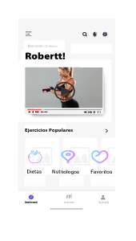

Imagenes de Saal-ud App |
ENLACES DE DESCARGA
|
SAAL-UD APP TE OFRECE GRAN VARIEDAD DE PLANES ALIMENTICIOS, RUTINAS DIARIAS DE EJERCICIO, TODO ESTO CREADO POR NUTRIOLOGOS Y INSTRUCTORES PROFESIONALES PARA UNA MAYOR CALIDAD Y MEJORES RESULTADOS PARA LOS USUARIOS DE LA APLICACION
POR EL MOMENTO SAAL-UD APP SOLO ESTARA DISPONIBLE PARA DISPOSITIVOS ANDROID Y iOs, PERO QUEREMOS QUE ESTO CREZCA Y PROXIMAMENTE TENDREMOS LA PLATAFORMA WEB DE LA APP.
SALUD ALIMENTICIA¿Cuidas tu alimentación?
Publicado por OME PAKTLI Salud Integral en Jueves, 12 de julio de 2018